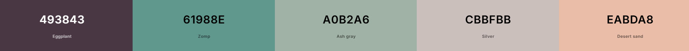

Site Name:
TAHO for Everyone
Site Purpose:
The purpose of "TAHO for Everyone" is to promote and celebrate taho, a beloved Filipino street food...
Scenarios:
- Where can I find taho vendors near me? – Use our interactive map to locate vendors in your area.
- Can I make taho at home? – Yes! Check out our DIY taho recipes for step-by-step instructions.
- Is taho a healthy snack? – Taho is rich in protein and calcium, but the sugar content depends on how much syrup is added.
Color Schema

Typography
Font 1 - Roboto Font
Font 2 - Exo 2 Font
Wireframe